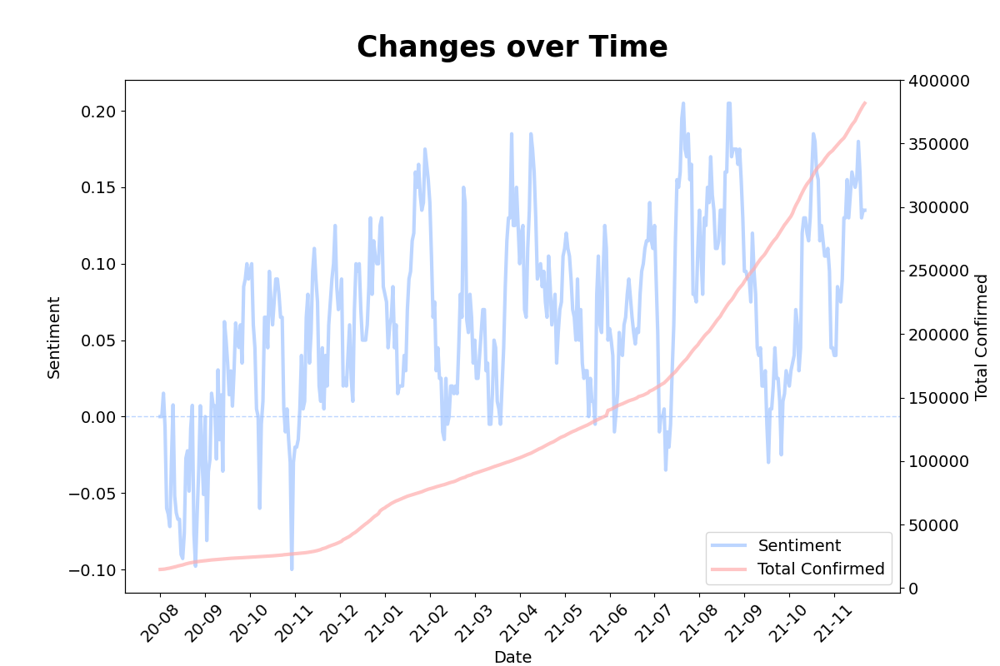

코로나 이전과 이후, 유튜브 제목에서 나타나는 감정 변화를 확인해보세요.
감정분석 결과
{% if user_want == '1' %}각 카테고리 별로 감정수치의 평균을 표현한 그래프입니다.
감정에 해당하는 숫자는 아래와 같습니다.
긍정적 : 1
중립적 : 0
부정적 : -1
감정수치는 -1에서 1 사이로 표시되며 1에 가까울수록 긍정, -1에 가까울수록 부정입니다.
위 그래프에서 가장 긍정적인 카테고리의 영상은 Comedy이며,
가장 부정적인 카테고리의 영상은 News&Politics 인 것을 확인할 수 있습니다.
참고: 18년 10월 ~ 20년 02월의 데이터는 존재하지 않아 제외하였습니다.
{% elif user_want == '2' %} 유튜브 트렌딩 비디오 평균 감정수치와 코로나19 누적 확진자 수 추이 그래프입니다.
기간: 2020년 08월 12일 ~ 2021년 11월 08일
위 그래프에서 보라색 선과 왼쪽 눈금은 감정수치를,
주황색 선과 오른쪽 눈금은 코로나19 누적 확진자의 수치를 의미합니다.
감정수치는 -1에서 1 사이로 표시되며 1에 가까울수록 긍정, -1에 가까울수록 부정입니다.
유튜브 트렌트 비디오 감정수치와 코로나19 신규 확진수 상관관계 그래프입니다.
상관계수(corr) = 0.397469
감정수치는 -1에서 1 사이로 표시되며 1에 가까울수록 긍정, -1에 가까울수록 부정입니다.
상관계수는 -1에서 1 사이 값을 가지고 있으며, 1에 가까울수록 양의 상관관계,
-1에 가까울수록 음의 상관관계, 0에 가까울수록 상관관계가 없음을 의미합니다.
위 그래프에서 상관계수는 약 0.40로 약한 양의 상관관계를 나타내고 있습니다.
참고: 18년 10월 ~ 20년 02월의 데이터는 존재하지 않아 제외하였습니다.
{% elif user_want == '4' %}
유튜브 트렌트 비디오 감정수치와 코로나19 누적 확진수 상관관계 그래프입니다.
상관계수(corr) = 0.388647
감정수치는 -1에서 1 사이로 표시되며 1에 가까울수록 긍정, -1에 가까울수록 부정입니다.
상관계수는 -1에서 1 사이 값을 가지고 있으며, 1에 가까울수록 양의 상관관계,
-1에 가까울수록 음의 상관관계, 0에 가까울수록 상관관계가 없음을 의미합니다.
위 그래프에서 상관계수는 약 0.39로 약한 양의 상관관계를 나타내고 있습니다.
참고: 18년 10월 ~ 20년 02월의 데이터는 존재하지 않아 제외하였습니다.
{% elif user_want == '5' %}코로나19 발병 전후 긍정적/부정적 비디오 제목의 비율 그래프입니다.
Rate = 긍정적인 제목을 가진 트렌딩 비디오 수 / 부정적인 제목을 가진 트렌딩 비디오 수
위 그래프에서 코로나19 발병 전 비율은 약 0.94이며, 코로나19 발병 이후 비율은 약 1.44로,
부정적인 비디오 수에 비해 긍정적인 비디오의 수가 증가하였음을 알 수 있습니다.
참고: 18년 10월 ~ 20년 02월의 데이터는 존재하지 않아 제외하였습니다.
{% else %}
Before
코로나19 이전 세 가지 감정에 대한 상위 7개 카테고리의 수치를 나타낸 그래프입니다.
긍정적 : 파란색
중립적 : 흰색
부정적 : 빨간색
긍정적인 제목을 가진 상위 7개 카테고리 중 Music은 순위권 밖으로 벗어났음을 알 수 있습니다.
중립적인 제목을 가진 상위 7개 카테고리 중 Gaming은 순위권 밖으로 벗어났음을 알 수 있습니다.
부정적인 제목을 가진 상위 7개 카테고리 중 Music은 순위권 밖으로 벗어났음을 알 수 있습니다.
7개의 카테고리 중 Entertainment에서 긍정적과 중립적이 가장 많으며,
News & Politics에서 부정적이 가장 많음을 알 수 있습니다.
After
코로나19 이후 세 가지 감정에 대한 상위 7개 카테고리의 수치를 나타낸 그래프입니다.
긍정적 : 파란색
중립적 : 흰색
부정적 : 빨간색
긍정적인 제목을 가진 상위 7개 카테고리 중 News & Politics은 순위권 밖으로 벗어났음을 알 수 있습니다.
중립적인 제목을 가진 상위 7개 카테고리 중 Howto & Style은 순위권 밖으로 벗어났음을 알 수 있습니다.
부정적인 제목을 가진 상위 7개 카테고리 중 Music은 순위권 밖으로 벗어났음을 알 수 있습니다.
7개의 카테고리 중 Entertainment에서 긍정적과 중립적, 부정적 세 가지 감정 모두가
1위를 차지하고 있음을 알 수 있습니다.
참고: 18년 10월 ~ 20년 02월의 데이터는 존재하지 않아 제외하였습니다.
{% endif %}